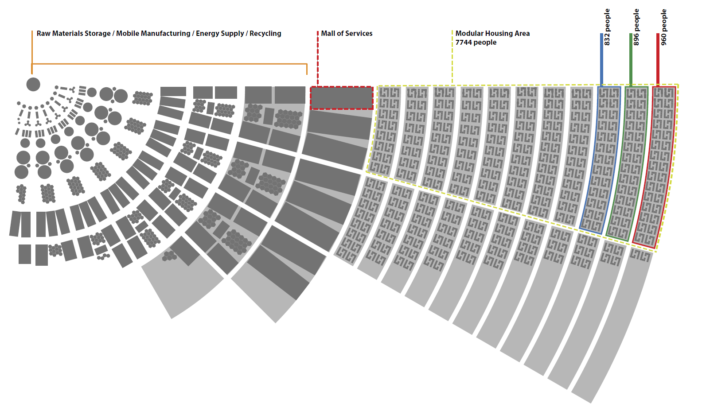
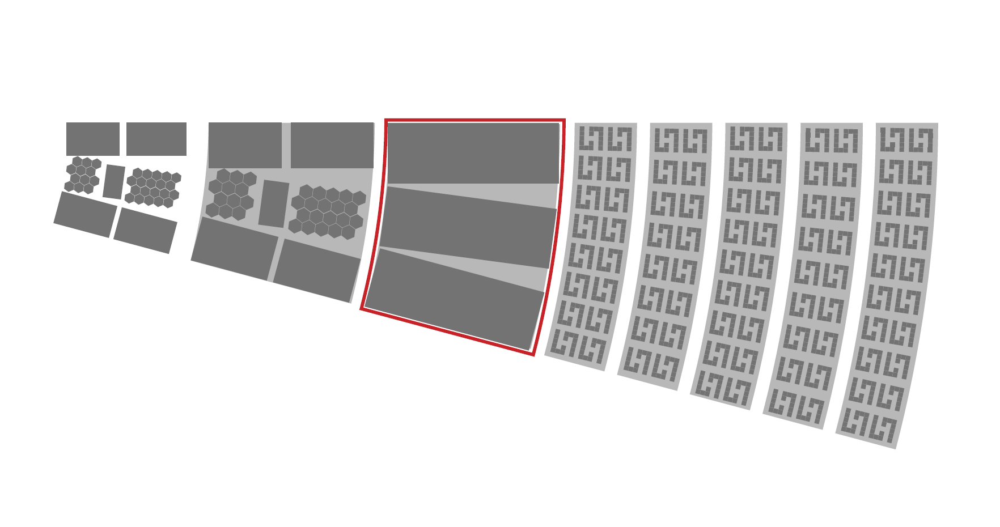
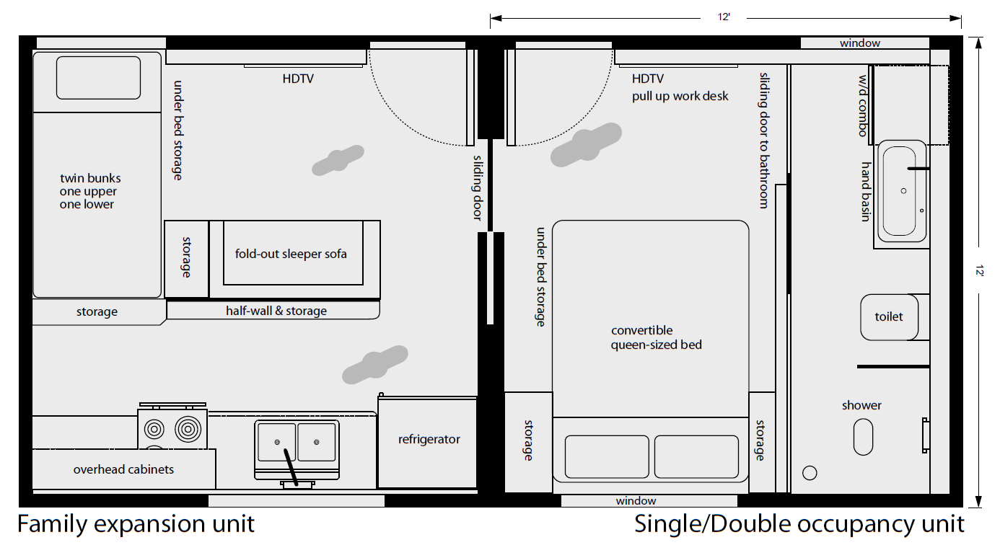

In the wake of natural disasters, survivors are often left to struggle with the devastating consequences of homelessness and a lack of basic resources. Even though humanitarian services work hard, their responsive and exploratory approach may lead to assistance that is inconsistent, uncoordinated, and temporary. Our solution? A scalable recovery algorithm for urban emergency environments that guarantees a consistent level of service for up to 100,000 survivors per city instance. And with the implementation of an autonomous system to manage its three phases of operation, no one is left behind in the long-term rebuilding process.
Some guiding research questions include: How can we improve the user-experience of survivors, and better manage the logistics of provisioning products and services? What is an effective protocol to assist victims with reintegration into society during the recovery phase? In an ideal world, what would a safe, effective, perfectly operating post-disaster recovery scenario look like? Can we end survivor homelessness with an algorithm?
Survivors of natural disasters may find themselves facing numerous challenges, including homelessness and lack of access to basic necessities such as phones, transportation, identification, money, food, water, clean clothes, and a mailing address. Additionally, they may have difficulty accessing a computer to complete emergency forms. The infrastructure they relied on may have been damaged or destroyed and could take months or even years to rebuild. These sudden changes can be overwhelming. How do these individuals cope? Where do they find shelter? Who provides support? Where can they access services to help them recover?
For decades, relief services have been inconsistent in providing solutions to assist survivors with reintegration into society during the aftermath of major disasters. In some cases, mismanagement and chaos is expected as a result of supply lines disruption, sporadic communication, and scrambled logistics. The news media consistently reports on abandoned pets, violence, and sanitation issues.
In an effort to help, many individual relief groups provide effective support, however, they typically operate with narrow focus, limited time span, and potentially decentralized communications.
Misappropriated resources and logistical blockages yield coats and blankets in the summer, pallets of water bottles sitting on the tarmac, trailer homes with asbestos, or an abundance of useless high-heeled shoes.
A list of types of natural disasters leading to homelessness can be found in the appendix.
02 Current solutions
A mix of below-average services.
An assortment of relief services exist, however, they are reactive, distributed, sporadic, and difficult to use. The majority of relief is provided by the federal government, state and local-level agencies, and non-profit organizations. To a lesser extent some services are provisioned or funded by private individuals and for-profit organizations.
Preparedness does not work for a long-term solution. Complete self-sufficiency is beyond the capabilities of any one person, as it requires a diverse range of resources that cannot be obtained by a single individual.
Examples of relief services are available in the appendix.
03 Related works
Literature review
Post-disaster operations are complex and multidimensional problems that require innovative and adaptive solutions. The following section will examine the current state of research in various domains related to these operations such as systems design, urban planning, temporary housing, robotic construction, autonomous drone assistance, and smart-cities.
To better orchestrate the delivery and provisioning of relief services, we propose a "Scalable Recovery Algorithm" - a simple, modular, scalable, reusable, centralized support system utilizing innovative technologies. A fractal-like recursive method for deploying an emergency urban environment, the plans reliably handle from 1,000 to 100,000 people (survivors, displaced, evacuees, and recovery teams) per instance and can be rapidly deployed. We use the term algorithm here because of the growing usage and understanding of its meaning, and to capture the nature of the plan as a step-wise, repeatable procedure.
Likewise, computer modeling tools such as simulators enable checking an assortment of finely-detailed scenarios prior to real-world deployment. The goal for this project has always been to create a system design which has less flaws than the heuristic methods presently utilized (preferably zero flaws).
Find additional discussion on the term algorithm in the appendix.
05 Algorithm
A well-ordered methodology
To solve a given problem, an algorithm follows a series of steps in a logical order. Our solution integrates new and existing technologies and connects them to a central system that can coordinate and support disaster relief efforts. Multiple instances of this system can launch simultaneously as needed. The system operates in three main stages: deployment, management, and closure. In the following sections, we describe the key features and functions of each stage.
Algorithm 1: Scalable Recovery
1. Identify problem & needs;
2. Gather resources;
3. Transport resources;
4. Build infrastructure;
5. Populate;
6. while count > T do:
7. Maintain daily process;
8. Adjust infrastructure;
9. Remove without trace;
10. Return unused resources;
The system adapts to the changing needs of the population by periodically adjusting the infrastructure. The main loop consists of two processes: expansion and contraction. Expansion occurs when the system detects new survivors or evacuees and provides them with shelter and services. Contraction occurs when the guests return to their original locations after the disaster recovery is complete. The following flowchart illustrates these processes:
Fig. 1. Flow chart of Algorithm 1
We now discuss Scalable Recovery in detail below:
In step 1, identify the problem, the affected areas, and forecasted weather conditions, obtain an initial count of survivors/evacuees, determine all basic needs for this populous, and locate a feasible target site for the temporary city. A threshold T is set as a fraction of the populous. These factors are the inputs to the procedure.
In step 2, authorizations, permits, and sufficient resources are gathered including all transport units, building supplies, raw materials for factories, prefabricated components, robotics, food, water, etc.
Step 3: Next, the resources are transported to the target site and arranged at the designated resource zone.
Step 4: Next, the infrastructure is built and inspected including the zones, roads, factories, service modules, and residential units. At this point, the deployment phase is complete.
Step 5: Next, the management phase begins and ingress may occur to populate the city.
Step 6: While the population count is greater than threshold T, do the following steps 7 and 8:
Step 7: Monitor and maintain the daily living process, provisioning as necessary.
Step 8: Adjust infrastructure either upwards or downwards as the case may be. [Swift growth is mitigated by accurate forecasting in step 1.]
Step 9: When the threshold is reached, the loop exits, egress occurs, and the closure phase begins. The instance is terminated by the orderly deconstruction of all infrastructure, removing all material, and leaving no trace.
Step 10: Finally, all resources are returned to the point of origin for storage or redeployment.
Additional drill-down into each step of the process is forthcoming in a subsequent version of this document.
06 Framework
System architecture
Defined as the footprint of the system, the framework includes elemental factors such as urban policy; master plan; site feasibility; climatic considerations; and total cost. Each of these are discussed below.
Urban policy
Different deployment sites located around the country means that a multitude of local jurisdictions, regulations, and polices must be understood and followed prior to arrival. Ideally, these should be vetted long before a disaster occurs with agreements secured and confirmed. Policy overrides may be required if local governments are inoperable and immediate action is necessary. Examples might include temporary use of local resources such as water and electricity or use of existing properties or zones for alternative purposes.
Master plan
As a scalable system, the city blueprint anticipates growth and transformation. The plan considers circulation, flexibility, sustainability, parcel layout, roads, modular expansion options, uniform design standards, and zoning. It begins with laying out a 15-degree sector of a circular temporary city. Each sector is self-sufficient and includes zones for supporting resource storage, factories, services, and residences.
In the figure below, the red dot represents the center of curvature. The radius of the outer residence arc is approximately 4,600 feet (1400 meters). The width of the roads is approximately 36 feet (11 meters). [Wikipedia: Sector]
Fig. 2. Master
The sectors can be connected into a complete circular city composed of 24 sectors, capable of supporting 100,000 people.
Fig. 3. Layout
Alternatively, the self-similar sectors can be arranged in curved geometries to adapt to various topographic constraints.
Fig. 4. Alternating arrangement
Below is an example of a minimal deployment zone footprint to accommodate up to 1,600 people. From left to right, this includes one resource zone, one services zone, and three residential zones.
Fig. 5. A minimal deployment
Framework
Site feasibility
To expedite deployment, feasible sites are identified in advance of disasters, however, this is not always possible. Considerations for feasible sites include but are not limited to: site topology, area availability for flexible expansion, soil analysis, natural vegetation, water accessibility, electrical grid proximity, weather patterns, existing structures, and wildlife concerns.
Climatic considerations
Deployment may face various challenges from weather and environmental conditions. These include snow, ice, excessive heat, flooding, winds, and debris from destruction. Moreover, a long-term deployment may have to endure several seasonal changes.
Cost
Many service costs may be covered in a manner similar to current practices. As this proposal is a service "gap filler", all additional costs of deployment and sustainability should be determined and factored based on populous count.
07 Infrastructure
Elemental factors
This section addresses fundamental needs such as communication; public safety; transport methods and accessibility; distribution of energy & water; waste management; integrated energy re-usability; and sustainability. In the figure below, parcels are mapped to areas of the arc blueprint. Observe the order from left to right of the resource area (at the core of the circle), the designated service center area, and finally, the modular housing area. Also note the estimates for numbers of people. For example, a fully populated sector can accommodate up to 7,744 people. A more comfortable level would be 4,166 with some areas designated for green-space parks.

Fig. 6. Infrastructure organization (click or tap to zoom)
Communication
Integral to all deployments is the ability to communicate with one another. At all times, people need to know the whereabouts of their loved ones. This is most punctuated during and following a disaster. Further, it is important to understand the status of resources on a day-by-day, even hour-by-hour, basis. If depleted, a basic necessity might cause a serious ripple effect, especially at scale. Thus, a robust communications network is essential to the operations and support of the environment.
Public safety
Public safety is a crucial aspect of disaster response and recovery. It ensures the protection of lives and property from further harm and facilitates the restoration of normalcy. Distributed evenly throughout the city, policing and fire control are two key components of public safety. Policing helps to prevent and respond to crimes, maintain law and order, and coordinate with other agencies and stakeholders. Fire control helps to prevent and extinguish fires, rescue trapped or injured people, and mitigate hazards and risks. Together, they provide a stable and secure environment for the recovery and rebuild process.
Transportation
Transportation is another vital element. It enables the movement of people, goods, and services to and from the affected areas. It also supports the operations of an emergency urban environment by facilitating the delivery of relief supplies, the evacuation of casualties, the deployment of personnel and equipment, and the access to essential facilities and resources. Transportation helps to improve the efficiency and effectiveness of the recovery and rebuild process by reducing delays, costs, and risks.
Energy
Energy is another essential factor of disaster response and recovery. It provides the power and fuel for the functioning of an emergency urban environment. It enables the operation of communication systems, lighting systems, heating and cooling systems, robotic devices, and other critical infrastructure. Energy also supports the recovery and rebuild process by allowing the use of machinery, tools, and vehicles for clearing debris, repairing damage, and constructing new structures. Energy helps to enhance the quality and comfort of life for the survivors and responders in the aftermath of a disaster.
Emergency services systems need reliable and resilient energy sources. Disasters or terrorist attacks can disrupt or destroy conventional power plants, transmission lines and fuel supplies. Distributed renewable energy systems, such as wind, solar and geothermal, can provide independent and uninterruptible power in such situations. They do not depend on imported or scarce fuels, and their output can be predicted and stored for later use. For example, excess wind or solar power can pump water into reservoirs for hydropower generation. These features make renewable energy systems more robust and suitable for the Proximity Algorithm, which we are researching to optimize energy supply and demand during emergencies. This is a huge challenge that requires multidisciplinary solutions at various scales.
Water
Water is a fundamental necessity of disaster response and recovery. It provides the basic needs of hydration, sanitation, and hygiene for the survivors and responders in an emergency urban environment. It also supports the recovery and rebuild process by enabling the cleaning of contaminated areas, the irrigation of crops, and the generation of hydroelectricity. Water helps to prevent the spread of diseases, the loss of lives, and the deterioration of living conditions in the wake of a disaster.
Waste
Waste is a major challenge of disaster response and recovery. It refers to the unwanted or unusable materials that are generated by the disaster itself or by the relief activities. Waste can include debris, rubble, garbage, sewage, hazardous substances, and human or animal remains. Waste management is the process of collecting, sorting, transporting, treating, and disposing of waste in an emergency urban environment. It helps to reduce the environmental and personal impacts of waste, such as pollution, contamination, odors, and pests. Waste management also helps to facilitate the recovery and rebuild process by clearing space, recycling materials, and creating jobs.
08 Architecture
Design overview
The temporary city instance consists of three main components: centralized resource centers, distributed service centers, and secure compartmentalized housing. The centralized resource centers store and distribute essentials such as food, water, and other supplies. The distributed service centers are larger buildings that offer communal spaces for social interaction and mutual aid. The secure compartmentalized housing are smaller units that can be linked together to form clusters. They provide privacy and shelter for the survivors.
The design of the temporary city instance incorporates innovative materials and techniques that meet the criteria of emergency environment structures. These structures are non-polluting, reusable, quick to assemble, light weight to transport, and scalable to handle different disaster scenarios. They also balance the comfort and safety of the survivors with the need to avoid long-term dependency.
Construction
All building units are modular and can be quickly manufactured and assembled on-site. All components are recyclable and nonpolluting. The large service modules are designed for ultra-fast assembly with modular outer walls, a tensile fiberglass roof, and configurable spaces. Where possible, construction is automated by robotics with drone assistance.
09 Architecture
Resource centers
Forming the physical central core of the city is a space for support systems including resource storage, factory modules, energy generation, and waste removal/recycling. This zone provides all resources for the sector it is assigned. Factories are initialized with raw materials and produce refined components and assemblies. Power plants distribute energy to support the activity of all systems, services, and residences. The larger sector areas beyond the residential zones can be utilized for resource storage or processing when extra space is required.
Fig. 7. Supporting resources located within the city sector
10 Architecture
Service modules
Each sector includes a zone for three service modules situated centrally, as indicated in the figure below, between the supporting resource center and the residential arcs. The service modules include a flexible floor plan with each covering an area of 72,464 sqft (6732 square meters), measuring 453 ft by 160 ft (138m x 49m). For comparison, an average Costco warehouse store is twice the size at 144,000 sqft. Other features include: ultra-fast assembly, modular outer walls, tensile fiberglass roof, configurable interior spaces.

Fig. 8. Zone for service modules within the city sector
In addition to the general services module, adjacent modules provide additional services such as urgent care and veterinary.
Fig. 9. General services module location
The general service module acts as the ingress point for guests when the sector is declared open for operation. In the figure below for example, people arrive by bus and enter the upper left side of the module. After registering with the system, they are assigned to a residential unit, and provided with a palette of options, many of which are within close proximity. Men's and women's facilities are adjacent to the entrance. Just beyond the check-in area is a food court, clothing bank, and hair salon. Deeper within the module are additional community services such as child-care, counseling, computer access points, postal services and mailboxes, high-definition communication centers, and exercise facilities.
Fig. 10. Service module floor plan (click or tap to zoom)
On the upper right-hand side of the services unit is an area where people can queue for outbound transportation. This transport can be to the residential area or back to the areas being reconstructed. The image below depicts a tensile fiberglass roof in use at Denver International Airport.
Fig. 11. Tensile fiberglass roof
11 Architecture
Residential units
Minimalistic and smart residential units are based on a 12' x 12' (144 sqft) foot print. Each unit is designed for two adults. An expansion unit, can comfortably house up to three children. Two units (pictured below) measures 12' x 24' (288 sqft)*. The units can be assembled in a two-story option or interlinked (post-assembly) for additional space. These modular units can be quickly manufactured and assembled on-site. All components are recyclable and nonpolluting.
* For comparison, a typical FEMA trailer measures 14' by 22' (308 sqft) [Wikipedia: FEMA trailer].

Fig. 12. Residential units (click or tap to zoom)
The design of the residential units is inspired by the efficiency hotel chain Yotel. An example of the interior layouts from the London location are depicted in the images below. The primary design enhancement to the units shown here is the expansion and configuration options to accommodate larger families and longer stays.
Fig. 13. Images of a 12’ x 8.5’ unit at Yotel in London (click or tap to zoom)
Configuration
Eight units can be connected into a J configuration. When two mirrored J configurations (16 units) are linked and arranged in the formation as indicated in the figure below, a small community courtyard effect is created. Notice the courtyard is the shape of the letter H, thus this arrangement is called an H configuration. This particular example arrangement can accommodate 20 adults with 18 children on a single-level.
Fig. 14. 16-way arrangement: H configuration
A plurality of the H configurations can be arranged along the arc sectors of the city blueprint.
Fig. 15. Residential units located in the city sector
Below is a rendering of an experimental, alternative arrangement of the H configuration forming a recursive H configuration. This was rendered using p5.js. [Sketch: recursiveH]
Fig. 16. Residential units arranged in a recursive configuration
We experimented with module configurations to determine an optimal layout. Below is a sampling of several alternative trials.
We also explored hexagonal-geometry modules and configurations.
Fig. 18. Hexagonal housing module configurations
Find additional preliminary visualizations of the city architecture in the appendix.
12 Management
Maintenance
The entire system status can be monitored and managed with ease including deployment, setup, maintenance, provisioning (such as food, clothing, counseling, childcare, education, transportation, health & policing services), tear down, and cleaning & storage of the system components between uses.
Fig. 19. Early sketch of the management console
Below is an example visualization of the management console. The present view is indicating all security-related issues, gray-coded by severity. An authorized manager would be able to access this screen and swipe left or right for the maintenance, inventory, or other views. Tapping on any arc would open an additional view to present or update detailed status.
Fig. 20. Visualization of the management console (click or tap to zoom)
An interactive, color version is under development as an OpenProcessing sketch. [Website: visual].
Example management status levels are described in the appendix.
The system ensures orderly distribution of resources with a smart allocation algorithm. The computer tracks the usage and inventory of supplies and reorders them automatically. Families receive identifier smart cards that prevent looting and theft. The cards are password protected and easy to cancel if stolen. The system can also locate unauthorized users with tracking enabled from the security management screen. The algorithm provides clear instructions for every step of the process: set up, distribution, restocking, and tear down. The master manual covers all activities and is available online, audio, and printed format.
Smart city
Intelligent mechanisms, smart control, and process improvement are crucial components in the development of smart cities. The intersection of machine learning, knowledge engineering, and simulation can facilitate the creation of such mechanisms. Software mechanisms can be developed to manage the complex systems that make up a smart city, enabling efficient control and optimization. Subject matter expertise can be captured and structured for retrieval and understanding by future generations of humans and computers through the use of knowledge engineering techniques. Large language models such as GPT can provide leverage by enabling natural language processing, semantic understanding, and context-awareness. These technologies can help to automate decision-making processes and enable rapid analysis of large amounts of data, leading to improved resource allocation, enhanced citizen services, and better urban planning.
Each deployment event (of the Proximity Algorithm) will yield newly learned experience and knowledge which must be integrated with the existing repository. How can operational best-practices be automatically identified, adapted, and reused? How can we automatically structure, organize, and update information and procedures for future iterations.
HCI Integration:
advancing the state-of-the-art in communicating knowledge using multimodal natural user interfaces. Rather than complexifying the user interface, how can we simplify, abstract, and ameliorate the interactions between humans and computers?
13 Closure
System shutdown
The temporary city instance shuts down when it reaches the minimum population threshold. The system relocates any remaining survivors to other temporary shelters in the affected areas. Then, it deconstructs all infrastructure in an orderly manner and transports all material from the site. The system ensures that the location is clean and free of any traces of the instance. Finally, it returns all resources to their source origins for inspection, storage, and future use.
Adaptability
Future application
Future uses of the "Scalable Recovery Algorithm" include assisting displaced war veterans, refugees, or immigrants, adapting to other cultures around the globe, and ending general homelessness completely. A closed version of the system can be used off-world in orbit, on the Moon, Mars, or other space colonies.
14 Research
References
Credits
Primary authors
Alyce N. Hoggan is the executive director, co-founder, and principal investigator of kynamatrix Research Network. She holds a Master of Design from Carnegie Mellon University and a Bachelor of Fine Arts in visual communication design from Kent State University.
J. William Dunn is a systems architect, software research engineer, and open source contributor. He received his master and bachelor degrees in computer science from Arizona State University.
Acknowledgment
Special thanks to:
Volunteers nationwide, for expert advice